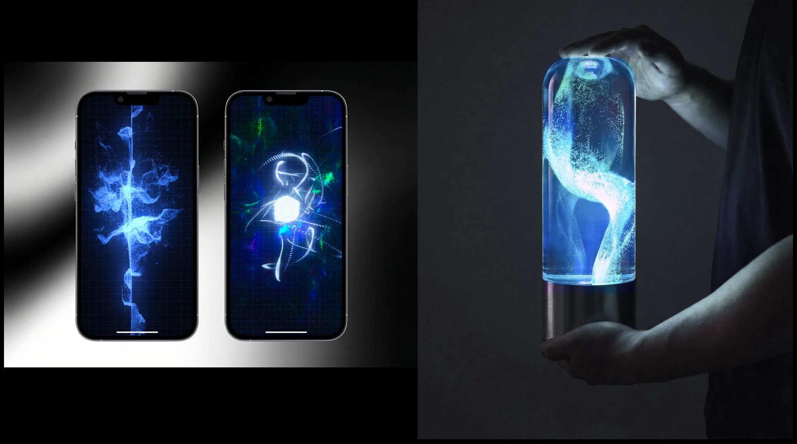

2025 · PERSONAL WORK
AURA
Environment-Aware Interactive Ambient Light
Sound, light and environmental sensing create lifelike feedback, turning an ambient lamp into an emotional interior interface that responds to its user.

Environment-Aware Interactive Ambient Light
Sound, light and environmental sensing create lifelike feedback, turning an ambient lamp into an emotional interior interface that responds to its user.